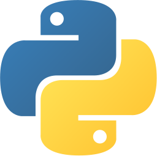
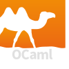

曹子宸
武汉大学 (WHU) | 计算机科学与技术 (Computer Science and Technology)
电话: 15982191108
教育背景
武汉大学
计算机科学与技术
2023.09 - 至今
CET-6 / CET-4
597 / 645
IELTS
7.5
GPA
3.91 / 4.0
学习成绩排名（截至前五学期）
8 / 236
Top 3.38%
核心课程： 操作系统、计算机网络、计算机组成原理、数据结构、离散数学、数据库原理、编译原理、算法设计与分析、计算机图形学等。
项目经历
1. F7LY-OS（系统能力大赛 · 操作系统内核实现赛道）
2025.03 – 2025.08
项目描述：
负责人，设计并实现一个基于 C++ 的宏内核操作系统，支持 RISC-V / LoongArch 双架构，实现 200+ POSIX 系统调用，通过大部分 LTP 测试及竞赛官方用例，验证内核稳定性与兼容性；负责核心子系统架构设计与关键功能落地。
Tech Stack：
C++ / OS Kernel / RISC-V / LoongArch / Virtual Memory / Page Table / POSIX / LTP / FAT32 / ext4 / IPC（Shared Memory, Pipe）/ Device Tree
2. StarryOS（2025 秋冬季开源操作系统训练营 · 项目一）
2025.09 – 2025.12
项目描述：
优秀学员，参与 组件化操作系统 StarryOS 的架构实践，在 Rust 生态下完成驱动与硬件抽象相关工作；负责 LoongArch 物理开发板适配，并实现 板级无关的 AHCI 驱动，解决缓冲区异常与 I/O 稳定性问题。
Tech Stack：
Rust / Component-based OS / LoongArch / AHCI / Block Device Driver / DMA / Buffer Management / rcore / ArceOS
科研经历
1. 基于 3DGS 与射频预测的连通性感知多机器人探索系统 (Nexus²)
2025.10 – 2026.03
研究内容：
针对复杂三维环境中多机器人协同探索的通信断连问题，提出连通性感知的探索框架 Nexus²（在投 IEEE TMC，共同一作）。基于 3DGS 构建体素级射频预测模块，结合在线稀疏信号与 LiDAR 点云渲染空间无线电场，解决多径与遮挡难题；并将射频预测作为主动决策先验，设计去中心化的角色分化机制（探索者/中继者）与连通性感知路径规划，实现无人车网络拓扑自适应重构，探索效率提升达 23.8%。
Tech Stack：
3D Gaussian Splatting / RF Modeling / Multi-Robot Exploration / Role Differentiation / Path Planning / PyTorch / ROS
2. 基于空间射频建模的连通性感知双向 3DGS 流媒体系统 (NexusStream)
2025.12 – 2026.04
研究内容：
面向商品级 WiFi 场景下低延迟全息远程会议（Telepresence）需求，提出双向 3DGS 流媒体框架 NexusStream（在投 UbiComp，共同一作）。摒弃传统被动式的比特率自适应算法，引入特定场景的 3DGS 射频地图（Radiomap）以精准预测用户移动轨迹上的未来网络传输风险；结合预测信号，设计联合视口相关性、缓冲区状态与延迟约束的双向 Layer-Tile-Segment 调度策略，在信号恶化前主动下发关键帧，显著降低网络波动导致的画面冻结与传输丢失。
Tech Stack：
3D Gaussian Splatting / Volumetric Video Streaming / Spatial Radiomap / Adaptive Bitrate Scheduling / Bandwidth Prediction
课程项目 已折叠，点击展开
项目概述：
使用 Verilog 实现五级流水线 CPU，围绕 RV32I 指令执行通路完成流水线寄存器、基础数据通路与仿真验证，支撑计组课程中对处理器设计与实现流程的系统训练。
项目概述：
使用 OCaml 实现 ToyC 编译器，覆盖词法分析、语法分析、语义处理与代码生成等核心环节，并结合课程目标完成编译流程的模块化实现与调试。
获奖情况
- 2024-2025 国家奖学金 (National Scholarship)证书编号 BZK2025024184 国家级 TOP 0.4%
- 2024-2025 优秀学生甲等奖学金、校级三好学生 校级 Top 10%
- 2023-2024 优秀学生乙等奖学金、校级三好学生 校级 Top 15%
- 2023 黄彰任奖学金 校级 荣誉称号
- 2025 全国大学生计算机系统能力大赛操作系统内核实现赛道 国家级 二等奖
- 2025 华中杯数学建模竞赛 省级 二等奖
科研技能
- 掌握

 C/C++、
C/C++、 C#、Rust、
C#、Rust、
Python 等编程语言；熟悉 Linux 开发环境。 - 熟悉操作系统原理 (OS)、计算机网络、编译原理。自学完成过MIT S081操作系统课程，STANFORD CS144计算机网络课程。
- 使用

OCaml 书写过达到 90% 水平 gcc -O2 的编译器；使用 Verilog 在计组课设中设计实现五级流水线 RV32I 架构 CPU。 - 掌握
 Git 版本控制工具，参与过多个开源项目，熟悉 PR 合并流程。
Git 版本控制工具，参与过多个开源项目，熟悉 PR 合并流程。 - 熟悉LaTex文档编写。
- 英语水平：CET-6，能流畅阅读英文技术文档。
学生工作
- 2025 班长
- 2023.09 - 2025.06 武汉大学广播台编辑部 核心成员 / 负责人
- 2023.09 - 至今 武汉大学真趣书社（图书馆附属社团） 核心成员 / 负责人